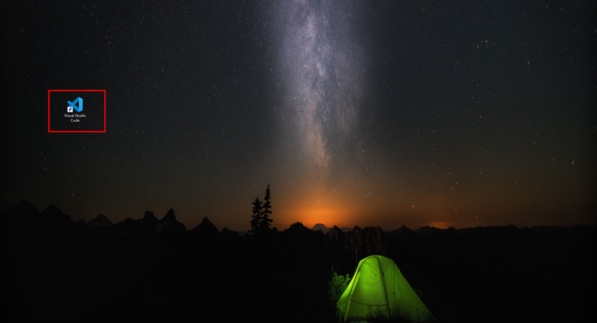

Usemos Visual Studio Code
Primeros pasos…
¿Que es el Front End?
La parte de un sitio web con la que el usuario interactua directamente se denomina interfaz de usuario o simplemente interfaz. Se podría decir que es la parte del cliente de una aplicación. Incluye todo lo que los usuarios experimentan: colores, estilos, imágenes, gráficos, tablas botones, animaciones, etc.
Para esta parte del desarrollo de software se utilizaran principalmente lenguajes como HTML, CSS y JavaScript. Quien se encarga del Front End se encargan de implementar la estructura, diseño, comportamiento y contenido de todo lo que se vera en el navegador por el usuario. Las vistas del Front End pueden ser sitios web, aplicaciones web o aplicaciones móviles.
Tal que la capacidad de respuesta y el rendimiento son los objetivos principales de este apartado. Cuando se hace desarrollo de Front End se debe probar que el sitio o aplicación responda, que los elementos visuales aparezcan correctamente, y que las funciones se comporten correctamente.
Interfaz
- Para poder lanzar la aplicación de Visual Studio Code (Visual Code), podremos utilizar dos maneras, la primera de ellas a través del icono que se encuentra en el escritorio.

- Y la segundo sera buscando la aplicación en el menú de inicio.

- En cualquiera de los dos casos hacemos doble click y se lanzara nuestra aplicación, desplegándose la pantalla de inicio que es como la que se muestra a continuación.

- En el área de trabajo encontraremos algunas combinaciones para atajos bastante útiles, conforme vayas trabajando en desarrollo de proyectos, entenderás para que se usan estos atajos.
Personalización
Algo que consideramos importante es que tu experiencia al trabajar en el desarrollo de software sea la mejor, y una parte esencial de esta experiencia es la visualización de la aplicación, por lo que aprovecharemos en esta ocasión para enseñarte rápidamente como se lleva a cabo la personalización del tema del Visual Code.
- Nos dirigimos a la parte inferior izquierda de la pagina de inicio y daremos click en el botón de configuración que es el que se indica en la imagen siguiente.

- Hacemos click en la opción Color Theme lo cual nos desplegara las opciones de tema que podremos utilizar.
 - Se pueden descargar mas temas si es que no te gusta alguno de los preinstalados, solo debemos dar click en la opción Browse Additional Color Themes…
- Se pueden descargar mas temas si es que no te gusta alguno de los preinstalados, solo debemos dar click en la opción Browse Additional Color Themes…

Extensiones
Otra de las cosas interesantes que nos ofrece el Visual Code es que podemos agregar complementos de manera muy sencilla y estos nos ayudaran al desarrollo de nuestros proyectos.
Estos complementos se conocen como extensiones y en la barra lateral izquierda podremos ir a una sección donde visualizaremos las extensiones que tenemos instaladas.

Ahí también encontraras un buscador donde podrás buscar de manera mas especifica extensiones, ya sea que estén instaladas o que se puedan descargar las veras enlistadas en la barra lateral.
Te recomendamos que instales las siguientes extensiones:
-
Color Highlight
Te cambia el fondo de los códigos en hexadecimal que representen un código de color.

-
CSS Flexbox Cheatsheet
Esta extensión te permitirá abrir de manera directa una vista de referencia de los estilos usando flexbox, herramienta fundamental para diseño.

-
ES7 React/Redux/GraphQL/React-Native snippets
Esta extensión nos ayudara a agregar funciones en todos los proyectos donde se utiliza React, que es una biblioteca de las mas usadas para desarrollo de Front End.
Lanzar plataforma
Para poder visualizar el Front End debemos de lanzar nuestra plataforma desde Visual Code, para hacer esto primero debemos abrir la carpeta donde se encuentra nuestro proyecto.
- Y apara esto nos dirigimos al menú superior y buscamos el botón File, al dar click en el se desplegaran varias opciones.

- Ahora debemos dar click en la opción Open Folder…, se nos desplegara una ventana del explorador de archivos, y aqui buscaremos y seleccionaremos la carpeta de nuestro proyecto a lanzar.

- Ya cargado el proyecto nos aparecerá la siguiente pantalla.

- Un paso importante sera instalar el proyecto, y para esto utilizaremos la herramienta npm (si no la tienes instalada puedes verificar como hacerlo AQUI). Debemos abrir la consola de Visual Code, y para esto nos dirigimos al botón de View, y seleccionamos la opción Terminal.

- Aparecerá en la parte inferior del área de trabajo una terminal y en la primer linea tendremos la dirección de la carpeta de nuestro proyecto.

- Escribimos lo siguiente:
npm install
- Debemos esperar a que se instale nuestro proyecto, la manera en que sabremos que ya se completo el proceso es que vuelve a aparecer la ruta de nuestro proyecto como cuando se desplegó la terminal.
- Y ahora si, para poder lanzar nuestro proyecto utilizaremos el siguiente comando.
npm start
- Se abrirá una nueva pestaña en el navegador que estemos utilizando o en el que tengamos como predeterminado. De esa manera visualizaremos la parte del Front End de nuestro proyecto.
¡FELICIDADES HAS CONCLUIDO CON ESTA SECCIÓN!
Si aun no los has revisado checa esta otra documentación…